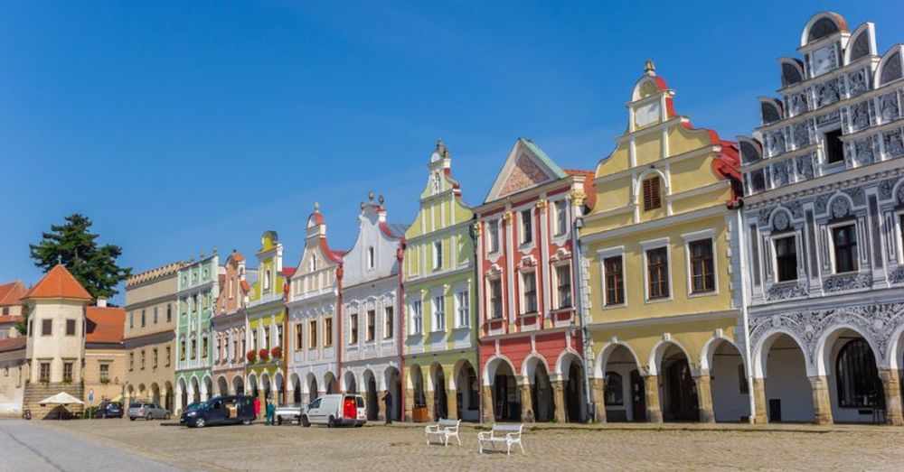

Descoperă orașul Telč - O călătorie în Cehia
Telč este un oraș cu un farmec istoric și arhitectural remarcabil, oferind numeroase atracții pentru vizitatori:
-

Castelul din Telč - Bijuterie arhitecturală
Descoperă splendoarea arhitecturii renascentiste a castelului din Telč, înconjurat de un șanț pitoresc.
-

Piața centrală din Telč - Pictorescă și autentică
Explorează piața istorică, înconjurată de case colorate cu frontoane ornamentate.
-

Case renascentiste din Telč - Eleganță arhitecturală
Admirați detaliile arhitecturale și elementele decorative ale caselor renascentiste din oraș.
-

Grădina castelului din Telč - Relaxare în natură
Bucurați-vă de frumusețea și liniștea grădinii castelului pentru o plimbare relaxantă.
-

Stavovský rybník - Lacul Stavovský
Relaxați-vă lângă lacul Stavovský și bucurați-vă de peisajul pitoresc.
Concluzii
Telč este un oraș cu un patrimoniu arhitectural impresionant, oferind o călătorie în timp și cultură.